Хотите ретро-фотосессию - тогда Вам именно сюда! Старые фотоаппараты
и съёмка на плёнку (т.е. "аналоговая фотография") - моё хобби. Здесь
вы можете посмотреть примеры сессий, а также найдёте несколько советов
относительно как подготовиться и как вести себя во время съёмки.
Итак, поехали - крутите вниз :)
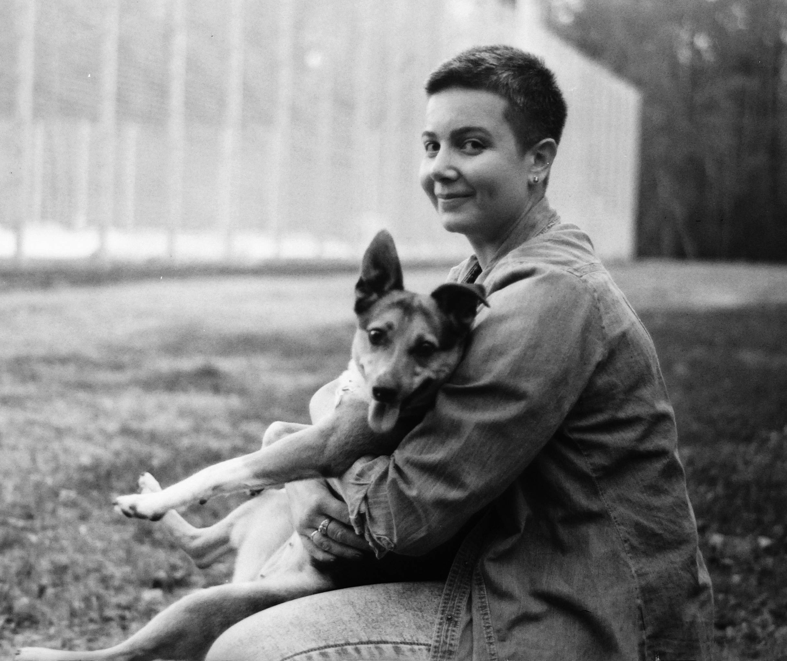
Здесь собраны фотографии - примеры c разными людьми (и знакомыми и просто прохожими) - на них мы поясним некоторые полезные правила и идеи - как держаться, что надеть - и также чуть-чуть о приёмах которые мы используем в съёмке.
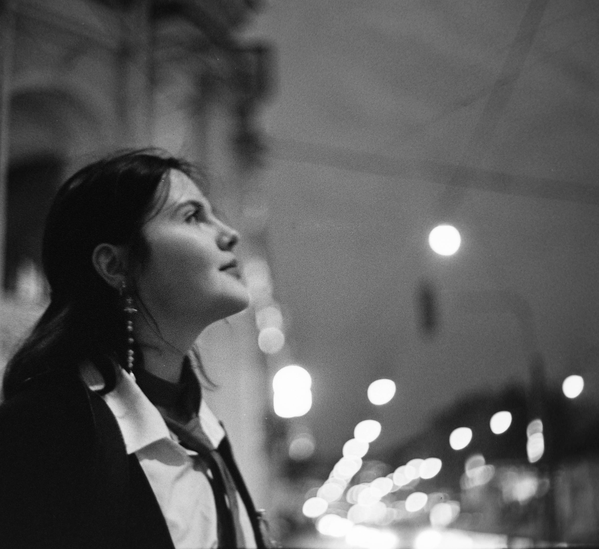
Неожиданный случай ночной фотосессии.
Снимать на плёнку в темноте затруднительно - "медленные" выдержки,
максимально открытая диафрагма - и то места приходится выбирать под
фонарями или у освещенных витрин. Зато из-за размытия фона и нелинейности
передачи яркости снимки получаются довольно необычными.
больше с этой сессии - в отчете на ломографии
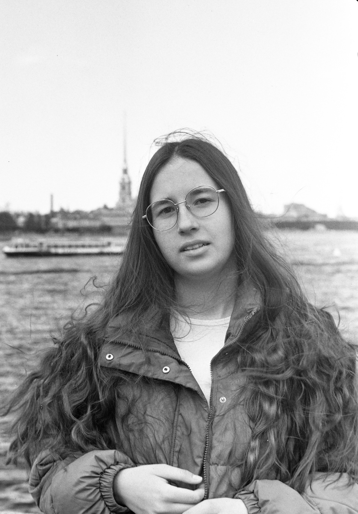
Съёмка в пасмурный день - кадры
почти всегда лишены резкого контраста - зато нам в этот день
помог ветер - очень выгодно играя с чудесной прической нашей модели.
20 кадров этой сессии
(съёмка для модельного портфолио)
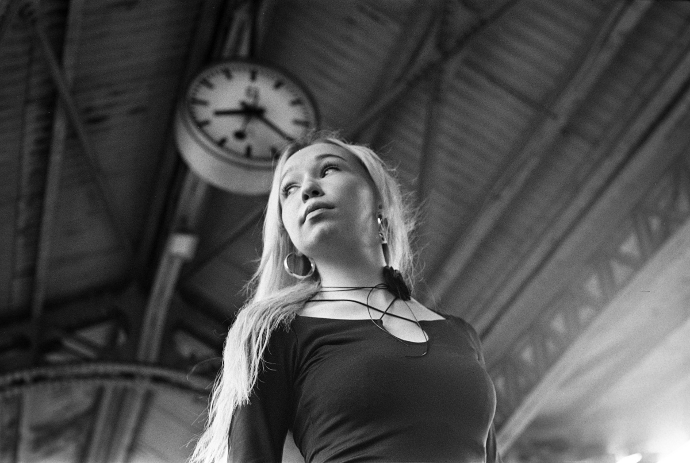
Фотосессию на вокзале предложила сама
Виктория. В помещениях этого исторического здания условия для съёмки неидеальны -
но общий антураж безусловно стоит того.
49 кадров этой сессии
(съёмка для модельного портфолио)
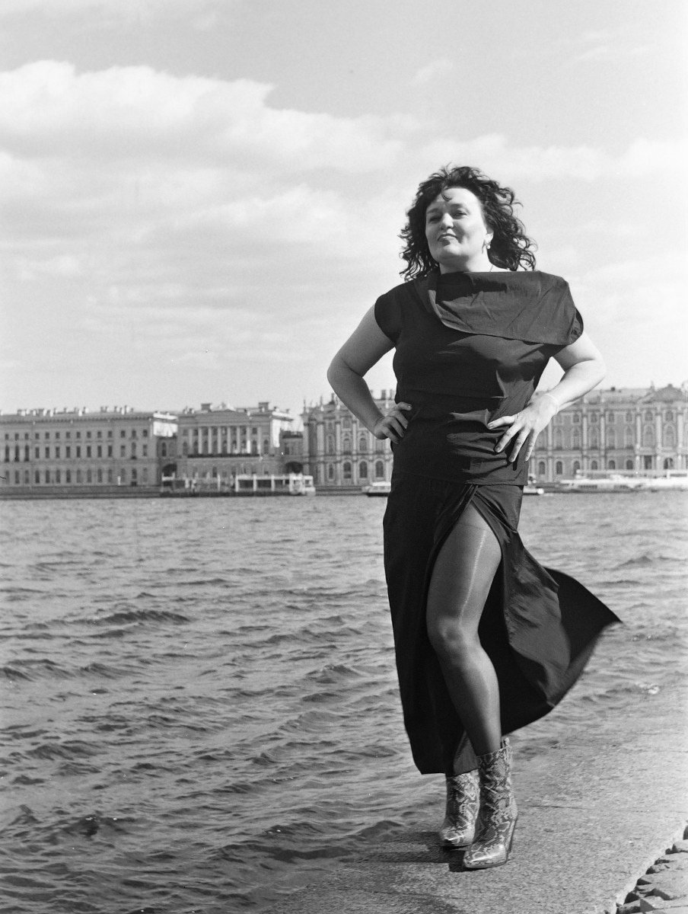
В этот раз наоборот несмотря на
прохладную погоду нам радостно светило солнце. Мы любим солнце, оно даёт
интересные контрасты на фотографиях - правда когда оно слишком высоко и
слишком ярко светит - труднее выбирать удобные ракурсы - чтобы не слепило,
не бросало некрасивых теней и так далее.
43 кадра этой сессии
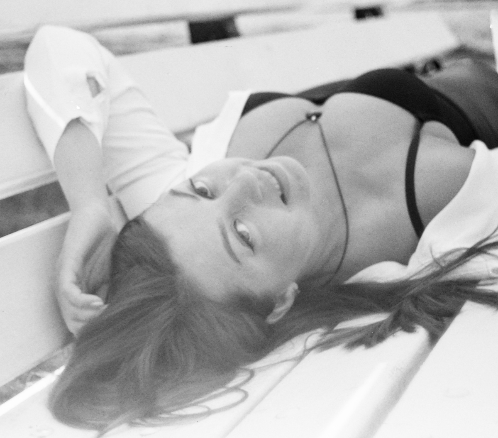
Небольшая фотопрогулка между Маяковской,
Спасом-на-Крови и по каналу Грибоедова - со Светланой, которая пока не
профессиональная модель но решительно планирует ею стать!
58 кадров этой сессии
(съёмка для психологического тренинга)
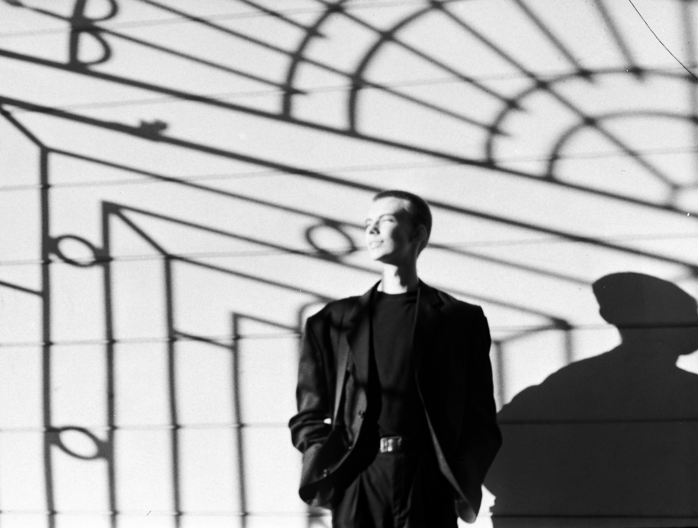
Мужчин фотографирую реже (просто
потому что хуже представляю как их "сделать красиво") - но вот
весьма эффектный и элегантный Даниил - во многих случаях он сам смог
предложить варианты интересных кадров.
38 кадров этой сессии
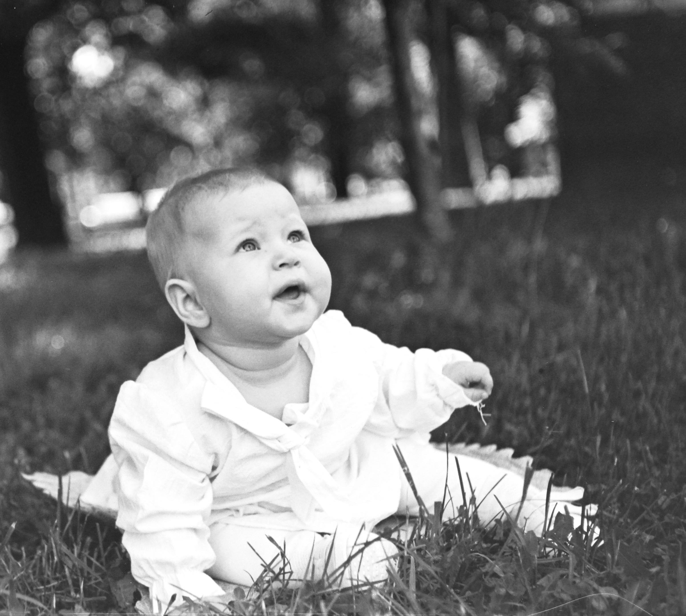
Валерия - возможно, самая юная модель среди тех
с кем повезло работать. Её мама, Виктория, предложила сделать несколько снимков
в Парке Победы. К сожалению многие кадры с этой съёмки оказались испорчены (брак плёнки),
бывает и такое - тем не менее остались позитивные вмечатления и вот эти
11 фотокарточек
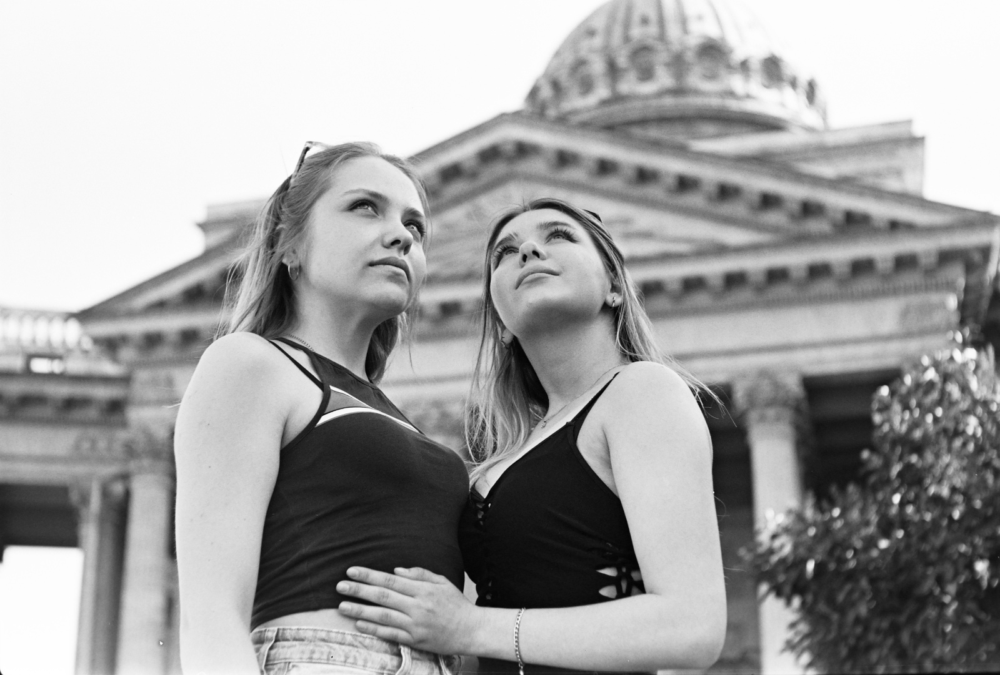
С этой сессией вышла маленькая неожиданность - очаровательная
Ольга не сказала заранее что возьмёт с собой обаятельную Анастасию. Лучше предупреждайте :)
просто потому что в таких случаях нужно брать с собой больше плёнки! К счастью со мной была
ещё одна камера, правда заряженная скорее для съёмки в помещениях - ну ничего, справились!
66 фото с этой сессии
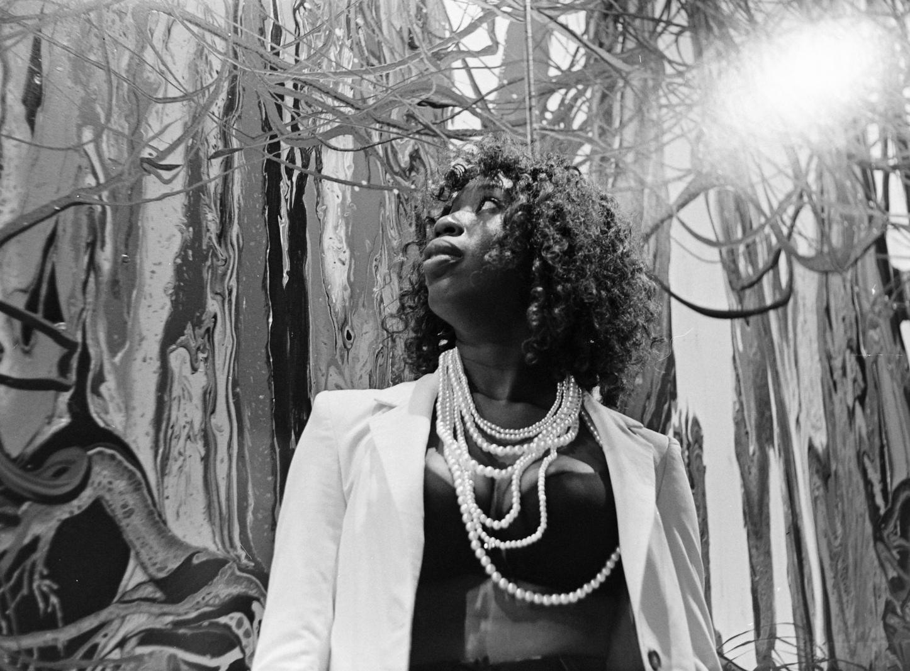
Очень интересная фотосессия с Шерилл - в том числе потому
что я плохо представлял как красивая тёмная кожа модели будет смотреться на, казалось бы,
тусклой в сравнении плёнке, в оттенках серого. Оказалось не так уж плохо - хотя сложности
с освещением преследовали нас всю дорогу. В галерее "АртМуза" куда мы пришли чтобы заодно
приобщиться к современному искусству - свет довольно неравномерный - но замечательный
антураж и вообще это чудесное место.
42 фото
(съёмка для блога модели)
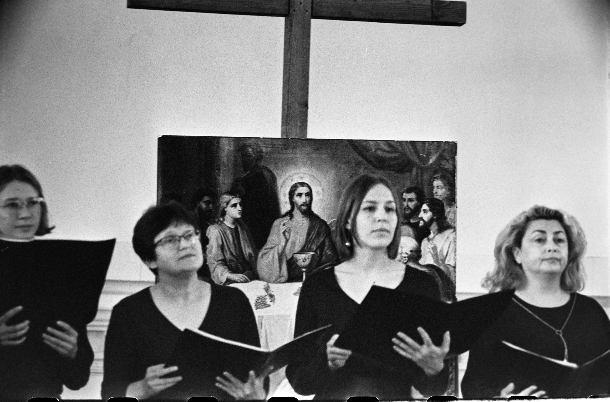
Любительский хор Ante Sonum выступал в шведской церкви
на Малой Конюшенной - туда меня пригласила знакомая, также участвующая в хоре. На удивление
получилось несколько неплохих кадров - да и мероприятие было замечательное :)
19 фото с этой сессии
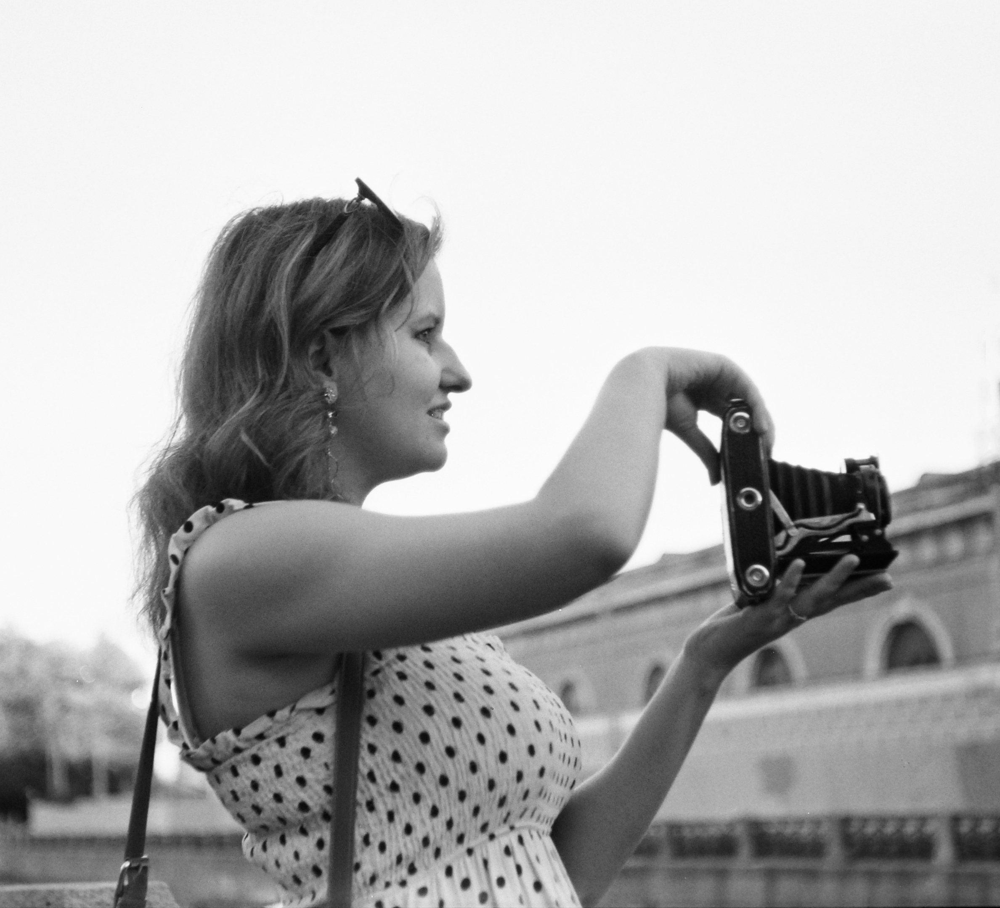
Ещё один их тех случаев когда случайно познакомились
на улице - а потом договорились устроить отдельную фотосессию. В этот день прогулка
по городу была осложнена надвигающимся праздником Алых Парусов - перекрытия дорог и
всё такое - зато нам случилось пройти немного необычными маршрутами :)
52 фото
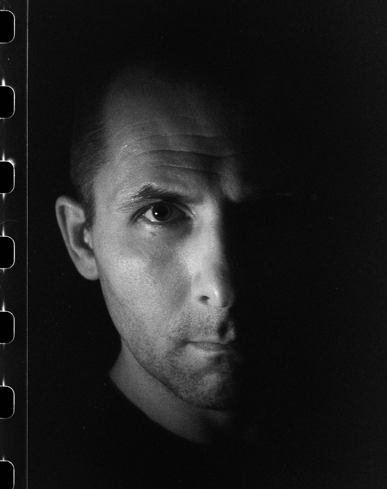
Меня зовут Родион, и как было сказано выше, фотография - одно из моих хобби. Профессионально я занимаюсь другими, более скучными вещами - разработкой софта, например :) Среди прочих моих увлечений - электроника и преподавание в школе. На этих фотографиях представлены в том числе и мои замечательные ученики - а также друзья, знакомые - и напротив, совсем незнакомые люди, дружелюбно позволившие сфотографировать их на улицах нашего прекрасного города.